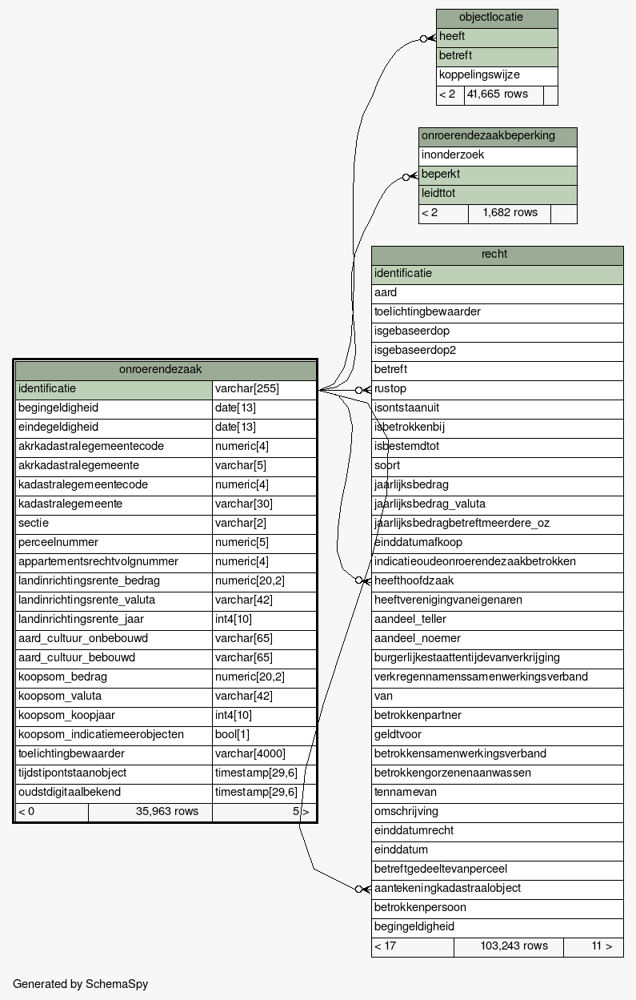
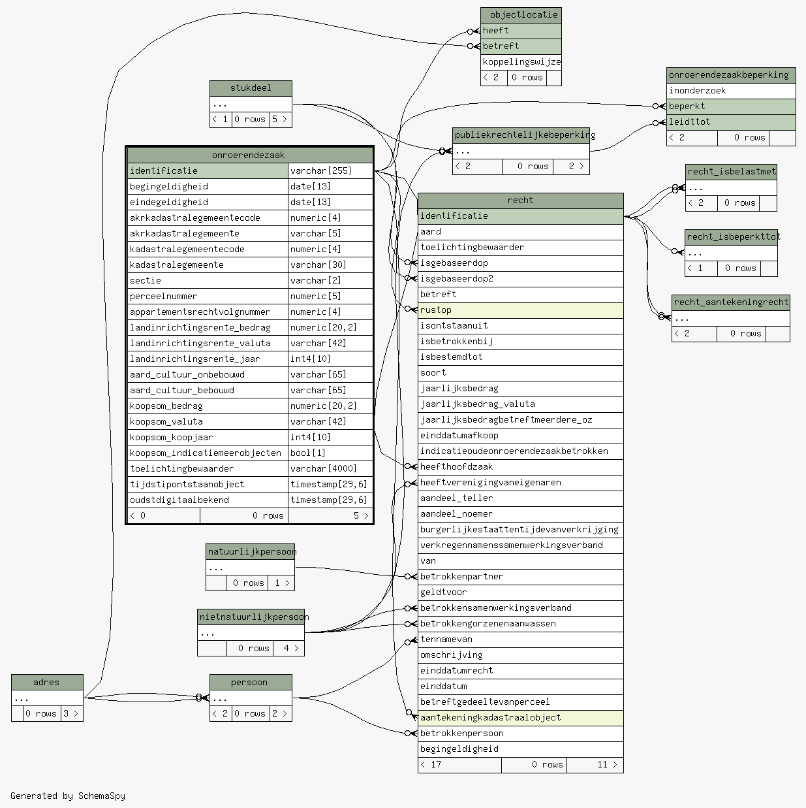

| Table rsgb.brk.onroerendezaak Een onroerende zaak is de grond, de niet gewonnen delfstoffen, de met de grond verenigde beplantingen, alsmede de gebouwen en werken die duurzaam met de grond zijn verenigd, hetzij rechtstreeks, hetzij door vereniging met andere gebouwen of werken.
|
Generated by SchemaSpy |
| |||||||||||||||||||||||||||||||||||||||||||||||||||||||||||||||||||||||||||||||||||||||||||||||||||||||||||||||||||||||||||||||||||||||||||||||||||||||||||||||||||||||||||||||||||||||||||||||||||||||||||||||||||||||||
Table contained 0 rows at Wed Feb 07 11:58 CET 2024 | |||||||||||||||||||||||||||||||||||||||||||||||||||||||||||||||||||||||||||||||||||||||||||||||||||||||||||||||||||||||||||||||||||||||||||||||||||||||||||||||||||||||||||||||||||||||||||||||||||||||||||||||||||||||||
Indexes:
| Column(s) | Type | Sort | Constraint Name |
|---|---|---|---|
| identificatie | Primary key | Asc | onroerendezaak_pkey |
|
  |